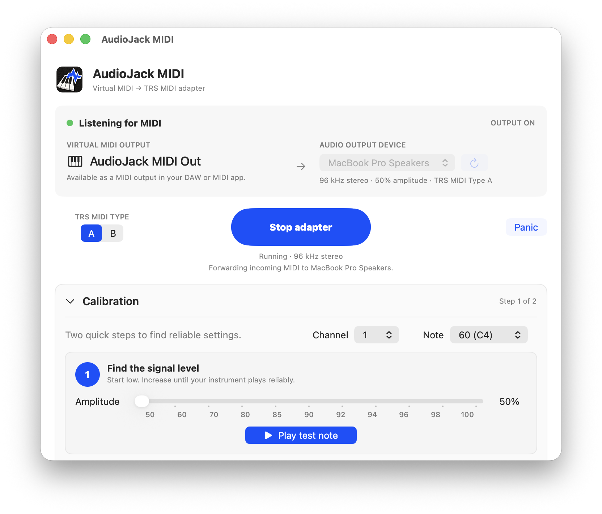

AudioJack MIDI creates a virtual MIDI destination on your Mac and encodes incoming MIDI messages as an audio signal. It lets you send MIDI to compatible hardware through an audio output, such as the 3.5 mm headphone jack, without a separate MIDI interface.
Connect to a TRS MIDI input with a normal 3.5 mm stereo cable, or to a 5-pin DIN MIDI input with a correctly wired 3.5 mm TRS-to-DIN MIDI cable. The app supports Type A and Type B wiring.
Download
Source code on GitHub
How to use it
- Connect your Mac’s headphone output to your hardware’s MIDI input.
- Open AudioJack MIDI, select the audio output and wiring type, then start the adapter. Follow Calibration to set the signal level and message spacing.
- In your DAW or MIDI app, select AudioJack MIDI Out as the MIDI output.
Compatibility: This is an experimental transport and is not electrically MIDI compliant. Reliability depends on the audio output, cable wiring and receiving hardware. Use a MIDI input, not headphones or speakers.
Installing the app
Unzip the download and move AudioJack MIDI to Applications. This build is ad-hoc signed but not notarized by Apple, so macOS may block it the first time you open it.
- Try to open AudioJack MIDI once, then dismiss the warning.
- Open System Settings → Privacy & Security. On Monterey, open System Preferences → Security & Privacy → General.
- Scroll to Security and click Open Anyway beside the AudioJack MIDI message. Confirm by clicking Open.
You may be asked for your Mac login password. Only approve a copy you trust. Apple’s instructions.
Created by Paulo Ricca